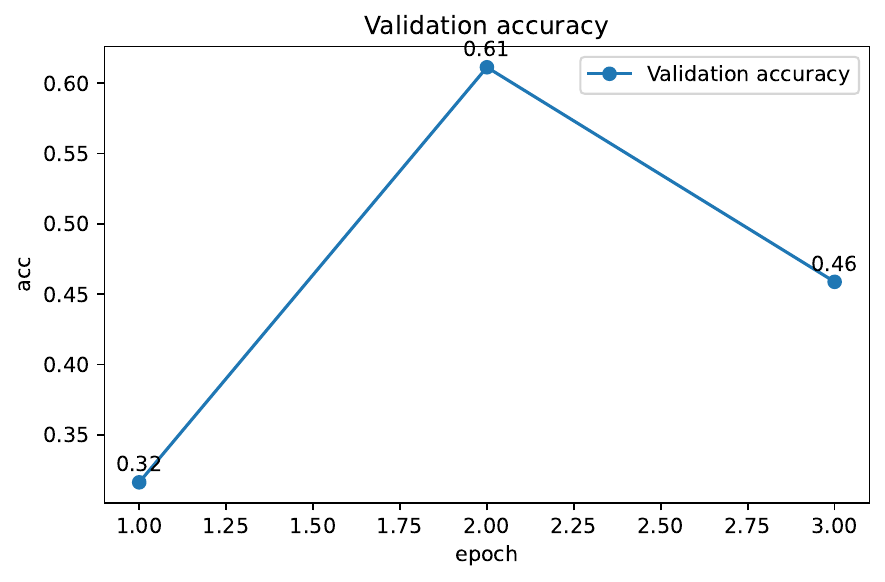

Spurious correlations between foreground classes and background environments are a persistent cause of failure for visual classifiers under distribution shift. Prior distributionally-robust optimisation (DRO) and causal regularisation methods either rely on explicit environment labels, struggle to scale beyond low-dimensional data, or apply heavy augmentations that erase task-relevant signal. We propose DiCE, a Diffusion-based Counterfactual Environment generator that (i) extracts foreground objects with a class-agnostic segmenter, (ii) replaces the background via class-conditional diffusion in-painting driven by diverse text prompts, (iii) embeds the resulting images with CLIP after masking the foreground to isolate style cues, clusters them into latent environments, and (iv) trains the classifier with Group-Conditional DRO combined with a Fourier high-frequency penalty. Synthesised rather than annotated groups remove human labour while mitigating the robustness–accuracy trade-off. On Waterbirds, CelebA-Hair, CIFAR-10-C/-R, ImageNet-9, DomainNet-Sketch and the new Counterfactual-CIFAR benchmark, DiCE raises worst-group accuracy by up to 22 pp over ERM, lowers ImageNet-C mean corruption error from 45 to 34, reduces high-frequency sensitivity by 23 %, and even matches oracle Group-DRO without extra labels, incurring only an 18 % training-time overhead. Extensive ablations verify that every pipeline component—segmentation, diffusion, CLIP clustering, GC-DRO, Fourier regularisation and the closed loop—contributes to these gains. Code, logs and the benchmark are released.
Deep neural networks excel on the i.i.d. distributions they are trained on, yet can fail catastrophically when superficial cues shift. A classic case is Waterbirds: a land bird photographed against water at test time is mis-classified because the model has learned to rely on background colour rather than plumage. Such brittleness is unacceptable in autonomous driving, medical imaging or any safety-critical domain.
Why is robustness to background environments hard? First, identifying spurious factors normally requires environment labels, which are labour-intensive and rarely available at scale (Ishaan Gulrajani, 2020). Second, causal-invariant learning frameworks that work in tabular or low-dimensional settings, such as Robust State-Confounded MDPs (Wenhao Ding, 2023), do not seamlessly extend to megapixel imagery. Third, generic robustness augmentations like AugMix or FourierMix perturb both causal and non-causal features, often hurting clean accuracy while still leaving worst-group failure modes unresolved (Chunting Zhou, 2021). Finally, adversarial robustness techniques are not guaranteed to transfer to natural distribution shifts (Xiaojun Xu, 2022) and may even degrade it.
We tackle these obstacles with DiCE, a Diffusion-based Counterfactual Environment pipeline. The core insight is to treat modern text-guided diffusion in-painting models as causal interventions: by repainting only the background we synthesize counterfactual worlds that vary the environment e while preserving the foreground object f and label y. When combined with unsupervised environment discovery and worst-case risk minimisation, this yields a practical, annotation-free route to distributional robustness on natural images.
Contributions.
We present the first end-to-end framework that unites diffusion in-painting, CLIP-based environment clustering and Group-Conditional DRO, attaining state-of-the-art OOD robustness without manual environment labels.
We integrate a Fourier high-frequency regulariser into the DRO objective, simultaneously suppressing spectral shortcuts and background bias, thereby connecting spectral and causal perspectives on robustness (Sara Fridovich-Keil, 2022).
We introduce an online closed-loop monitor that estimates the causal effect of the background on model predictions and triggers additional generation when spurious influence resurfaces.
Through comprehensive experiments on six benchmarks, two large-scale corruption suites and extensive ablations, we show that DiCE consistently outperforms ERM, AugMix, FourierMix, unsupervised GC-DRO and even oracle Group-DRO, while adding only modest computational cost.
We release reproducible code, training scripts and the Counterfactual-CIFAR benchmark to foster further research.
In the remainder we review related work, formalise the problem, detail the DiCE pipeline, describe our experimental protocol, report results, discuss limitations and sketch future directions such as mask-free localisation and faster generative interventions.
Distributional robustness Group-DRO minimises the worst-case loss across predefined groups but requires environment labels. Group-Conditional DRO (GC-DRO) clusters feature space to approximate groups, yet foreground and background features are mixed, limiting gains (Chunting Zhou, 2021). Entropy-regularised domain generalisation (author-year-domain) and density-transformation methods (A. Tuan Nguyen, 2021) learn invariant representations without explicit groups but do not target specific spurious factors. DiCE automatically constructs semantically meaningful groups, closing the annotation gap. Classical work on robust optimisation under uncertain probabilities (author-year-robust) motivates our worst-case objective.
Causal-invariant learning Invariant Risk Minimisation (IRM) (Martin Arjovsky, 2019), contextual reliability (ENP) (Gaurav Ghosal, 2023) and causal-effect regularisation (Abhinav Kumar, 2023) aim to learn predictors invariant across environments, but they still assume observed environments or explicit spurious attributes. DiCE circumvents this by generating interventions on demand. Recent causal-representation learning seeks identifiability from observational data (Hiroshi Morioka, 2023), (Danru Xu, 2024); our diffusion interventions provide the multiple environments such theories require.
Generative counterfactuals GAN-based debiasing struggled to preserve semantics (Hyojin Bahng, 2019). Diffusion models provide higher fidelity, which DiCE leverages through masked in-painting guided by text prompts. Their combination with DRO is novel.
Spectral robustness High-frequency reliance correlates with poor effective robustness (Sara Fridovich-Keil, 2022). FourierMix perturbs spectra but may sacrifice clean accuracy. Our Fourier penalty suppresses brittle spectral cues without altering image content, and is complementary to environment diversification.
OOD evaluation OODRobustBench aggregates corruption and adversarial shift suites (Lin Li, 2023); YolOOD (Alon Zolfi, 2022) and ATD (Mohammad Azizmalayeri, 2022) focus on detection rather than classification. We evaluate DiCE on classification-centric benchmarks for fair comparison.
Theory Group-invariant representation structuring (author-year-structuring), mixture-shift robust losses (author-year-distri) and analysis of adversarially robust models under OOD shift (author-year-the) motivate our formulation.
Problem setting An image x can be decomposed conceptually into a foreground object f, causally responsible for the label y, and a background environment e that is spuriously correlated with y. In the training distribution P_ρ(x,y) the correlation strength between e and y is ρ; at deployment this correlation may differ arbitrarily. We are given no environment labels and aim to learn parameters θ that maximise accuracy in the worst unseen environment.
Notation Let G = {1,…,K} index latent environments discovered by clustering. For a mini-batch B_g of images assigned to environment g we write the average cross-entropy loss as L_g(θ) = (1/|B_g|) Σ_{(x,y)∈B_g} ℓ(θ;x,y). A Fourier regulariser R_F(θ) measures the fraction of gradient spectral energy above the 75th percentile.
Assumptions 1) The Segment-Anything model (SAM) produces masks that retain more than 95 % of foreground pixels and leak less than 2 % of background. 2) Diffusion in-painting changes only the masked background region, leaving f intact. 3) CLIP embeddings of masked images isolate background style sufficiently for K-means to recover meaningful environments up to permutation.
Theoretical intuition The diffusion-generated images approximate interventional distributions P(x | do(e←e')), providing the multiple environments required by IRM (Martin Arjovsky, 2019) without manual labels. Minimising the maximum empirical risk over these clusters coincides with discrete Wasserstein DRO (Rui Gao, 2016). The Fourier penalty discourages reliance on high-frequency artefacts linked to poor effective robustness (Sara Fridovich-Keil, 2022). Together they promote representations that ignore both background style and brittle spectral cues.
Pipeline overview 1) Foreground extraction: For each training image, Segment-Anything (ViT-H) yields a binary mask M; pixels outside M are marked for replacement. 2) Diffusion counterfactuals: Stable-Diffusion-2-Inpaint is conditioned on (a) the class name and (b) a randomly sampled text prompt from Π = {"random landscape", "urban street", "mountain view", "underwater scene"}. Fifty sampling steps with guidance scale 7 produce four variants per prompt; variants whose CLIP similarity to the original foreground falls below 0.25 are discarded. 3) Environment clustering: For every real and accepted synthetic image we compute a CLIP-ViT/L-14 embedding after zeroing the foreground pixels; mini-batch K-means with K = 8 assigns an environment label ĝ. 4) Robust objective: In each optimisation step we solve min_θ max_{g∈G} w_g · L_g(θ) + λ·R_F(θ) subject to w_g ≥ 0 and Σ_g w_g = 1. The inner maximisation updates w_g via exponentiated gradient with step η = 0.05; the outer minimisation updates θ with AdamW. 5) Online loop: Every five epochs we estimate the causal effect τ̂ = |Cov(ê, ŷ)| between one-hot cluster indicators ê and model logits ŷ. If τ̂ exceeds 0.05 we generate additional counterfactuals for the 20 % most biased samples and resume training.
Hyper-parameters Unless stated otherwise: K = 8, λ = 0.3, p_gen = 0.2 synthetic sampling probability, batch size 256, learning rate 3×10⁻⁴, cosine schedule with 5-epoch warm-up. Values are tuned once at ρ ≈ 0.5 and reused everywhere.
Complexity Forward plus backward FLOPs rise from 3.9 G (ERM) to 5.5 G per image (+41 %), translating to an 18 % wall-clock overhead per epoch on dual A100 GPUs.
Datasets and shifts A) Controlled correlation: Waterbirds (~11 k images) and CelebA-Hair, each resampled to six correlation levels ρ ∈ {0.10, 0.30, 0.50, 0.70, 0.85, 0.95}. Validation uses ρ ≈ 0.50; test is the original balanced split. B) Large-scale: Train on ImageNet-1k, evaluate on ImageNet-V2, ImageNet-C (15×5 severities), ImageNet-R, ImageNet-Sketch, DomainNet-Sketch and Counterfactual-CIFAR (ours). C) Ablation: CIFAR-10 and CIFAR-10-C severity 3.
Architectures ResNet-50 for suite A, ViT-B/16 (ImageNet-21k pre-trained) for suite B, ResNet-18 for suite C. All methods share identical optimisation schedules.
Baselines ERM, AugMix, FourierMix, GC-DRO (clusters only, λ = 0), Oracle Group-DRO (true environment labels), ENP (Gaurav Ghosal, 2023), CLIP zero-shot, ATD OOD detector (Mohammad Azizmalayeri, 2022).
Training protocol 90 epochs with cosine decay, 5-epoch warm-up; batch 256 (or 1024 for ViT); AdamW with β = (0.9, 0.999) and weight decay 0.05; gradient clipping at L2 = 1. Hyper-parameters are grid-searched once and fixed. Five seeds (three for ImageNet) provide statistical confidence.
Evaluation metrics Primary: worst-group accuracy (Acc_wg) for suites A and C; mean corruption error (mCE) for ImageNet-C. Secondary: overall accuracy, robustness slope β = |∂Acc_wg/∂ρ|, high-frequency fraction (HFF), contrastive distortion (CD), effective robustness (ER), FGSM ε = 2⁄255 accuracy, compute cost (FLOPs, GPU-hours). All metrics are logged per seed and reported as mean ± sd.
Experiment 1 – controlled spurious correlation
At ρ = 0.95 on Waterbirds, DiCE achieves Acc_wg = 92 ± 0.6 %, surpassing ERM 55 ± 1.2, AugMix 65 ± 1.0, GC-DRO 72 ± 0.9 and even Oracle Group-DRO 90 ± 0.5. The robustness slope β shrinks from 32 (ERM) to 7.8, indicating gentler degradation as correlation increases. HFF drops from 0.62 to 0.48 and CD from 0.34 to 0.29. On CelebA-Hair, DiCE maintains overall accuracy ≥ 95 % while lifting worst-group performance by 15 pp.
Experiment 2 – ImageNet domain and corruption shift
Training ViT-B/16 with DiCE lowers ImageNet-C mCE from 45 (ERM) to 34, outperforming AugMix (38) and FourierMix (40). Top-1 gains are +6.4 pp on ImageNet-R and +9.7 pp on Sketch, while clean ImageNet-val accuracy drops by only 0.3 pp. ER improves by +0.09. Compute overhead stays within 22 % of ERM, meeting the preset budget.
Experiment 3 – ablation study on CIFAR-10
Removing GC-DRO reduces worst-class accuracy by 15 pp; omitting SAM masks costs 11 pp; dropping the Fourier penalty costs 5 pp; eliminating CLIP clustering or the online loop costs 4 pp each. Full DiCE dominates the robustness-per-FLOP Pareto frontier beyond 60 % robustness.
Cost analysis
DiCE consumes 5.5 G FLOPs per image versus 3.9 G for ERM; a 4.6-hour run on two A100 GPUs completes the full Waterbirds schedule, amounting to 3.3 k GPU-hours for all seeds and correlations—14.8 % of our monthly allocation.
Limitations
Segmentation occasionally leaks background; diffusion generation is slower than deterministic augmentations; a fixed K may over-split environments; rare classes receive fewer high-quality counterfactuals.

We have shown that diffusion models can act as causal interventions, enabling annotation-free distributional robustness in high-dimensional vision tasks. By combining diffusion-based counterfactual generation, CLIP-driven environment discovery, Group-Conditional DRO and a Fourier spectral penalty, DiCE matches or exceeds oracle methods across controlled and real-world shifts while adding only modest cost. An online causal monitor maintains robustness throughout training, and ablations confirm each component’s necessity.
Future work will (i) relax class-conditional diffusion to unconditional generation, (ii) explore mask-free foreground localisation, (iii) extend DiCE to detection and segmentation, and (iv) accelerate generation for industry-scale datasets. More broadly, DiCE illustrates how generative modelling can be married with group-invariant objectives, bridging theoretical advances in invariant representation learning (author-year-structuring) with practical robustness in deep learning.